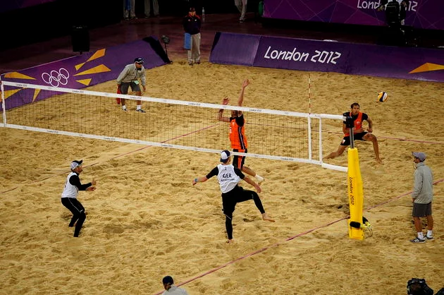
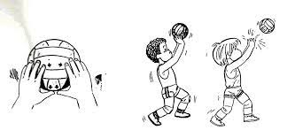

volei
voleibol ou vôlei é um esporte de interesse
entre duas equipes numa quadra retangular
(aberta ou fechada). Ela é dividida por uma rede
colocados verticalmente sobre a linha central.
O voleibol é feito com uma bola e inclui
diversos passa com as mãos. O objetivo
principal é lançar a bola por cima da rede e realizar-la tocar no chão do bola.
Regras do voleibol:
- As principais regras do vôlei são
- Cada equipe possui um técnico;,
- Não existe tempo pré-determinado para cada conjunto;
- Cada set tem um máximo de 25 pontos com uma diferença mínima de 2 pontos;
- Em caso de empate no set no final (24 x 24), a partida continua até que a diferença de
- Após o saque, a equipe só pode tocar três vezes na bola;
- Ganha a equipe que vencer três sets;
- Se houver empate nos sets (2x2) o 5º set será definitivo.

quantos jogadores tem no campo de voleibol
O vôlei de quadra é formado por duas equipes com 6 jogadores em cada. No total, são 12 jogadores. Existem ainda 6 jogadores reserva.
Além do vôlei de quadra, há também o vôlei de praia. Diferente da quadra, o de praia é jogado na areia e contém somente quatro jogadores, sendo dois de cada equipe.

Posições do voleibol
Cada jogador tem uma posição dentro da quadra, a qual apresenta uma ordem de rotação:
3 jogadores posicionam-se perto da rede;
3 jogadores posicionam-se na linha de trás.

Quando se comete faltas no vôlei?
As regras do voleibol incluem diversas faltas no saque, ataque, passe de bola, toques, posição, rotação de jogadores, dentre outros. Alguns exemplos de falta são:
Dois Toques: quando um jogador toca a bola duas vezes consecutivas ou a bola bate em várias partes de seu corpo.
Quatro Toques: quando a equipe toca na bola quatro vezes antes de enviá-la aos adversários.
Toque apoiado: quando um jogador se apoia em outro da sua equipe.
Também é considerado falta se ele se apoia em alguma estrutura ou objeto dentro da área de jogo para golpear a bola.
Fundamentos do voleibol
- Saque
- Recepção
- Recepção
- Ataque
- Bloqueio
Cada jogada do vôlei tem início com os saques. O sacador, como é chamado o jogador que lança a bola,
tem que arremessar a bola por cima da rede e dentro da quadra de seu adversário.
volei
Se ele ultrapassar o limite, a bola vai retornar para seu adversário sacar. Note que quando a bola toca no chão do time adversário, ocorre a marcação de pontos.
A chamada “zona de saque” representa o local onde o jogador (sacador) deve permanecer para lançar a bola.

Os levantadores, como o próprio nome já indica, levantam a bola com a ponta dos dedos.volei
Em seguida, passam aos atacantes que tentam marcar ponto ao lançar para o campo adversário.
Os atacantes colocam muita força na jogada e com um grande salto objetivam tocar o chão da equipe adversária para fazer o ponto.
Os adversários podem, no entanto, realizar um bloqueio ou defesa para que a bola volte e toque no chão da equipe que atacou.